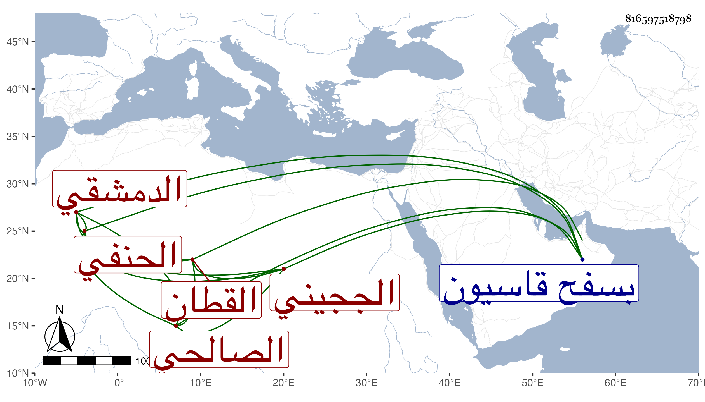

0902Sakhawi.DawLamic.ITO20230111-ara1.EIS1600.816597518798
Biography ID: 816597518798
1243
يوسف بن محمد بن أحمد الجمال أبو المحاسن الججيني الدمشقي الصالحي الحنفي القطان بسوقها وأظنه ابن عم موسى بن إسماعيل بن أحمد الحنفي الماضي . ولد تقريبا سنة ثلاث وسبعين وسبعمائة وسمع على أبي الهول الجزري ومن لفظ المحب الصامت أشياء وحدث سمع منه الفضلاء وكان خيرا . مات في سنة تسع وأربعين ودفن بسفح قاسيون وهو جد الشهاب أحمد بن خليل اللبودي لأمه رحمه الله .
